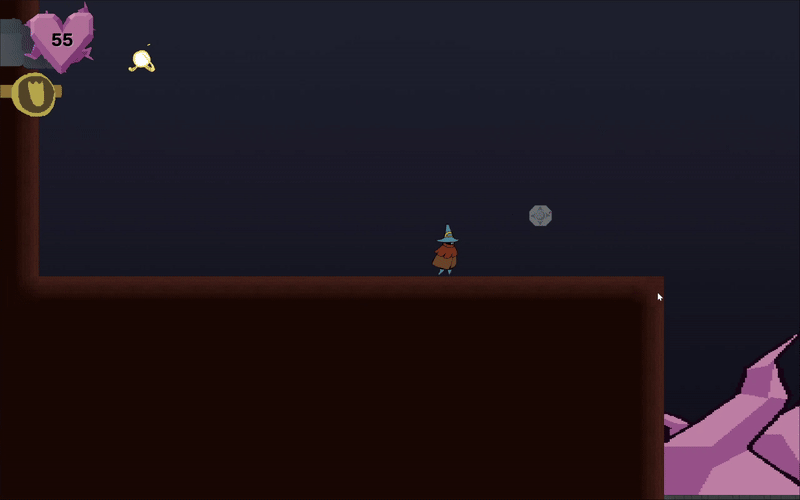
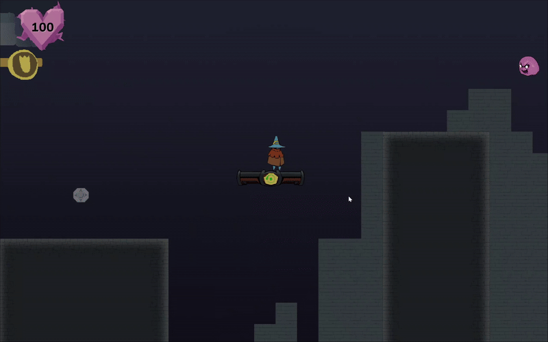
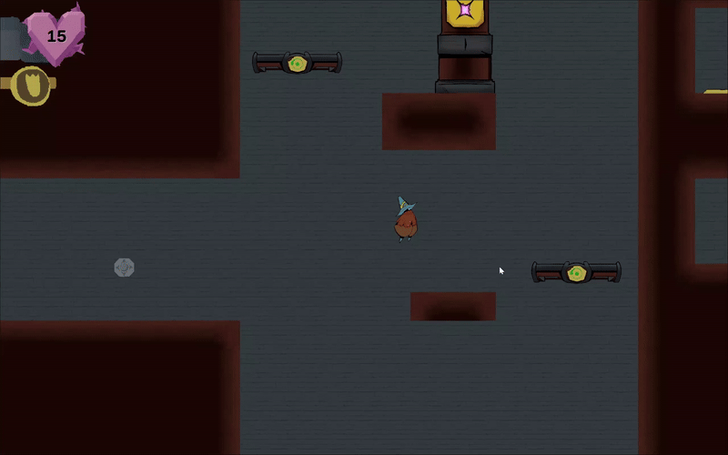

Personal project · GMTK 2025
Lasso Lass
A puzzle-platformer built around a gesture-driven lasso mechanic, developed under a four-day game-jam constraint.

Core combat-platforming with the lasso mechanic (Main View)

Lassoing intangible platforms & teleportation

Platforming

Activating pressure plates to solve a puzzle
My contribution
Owning the mechanic that defines the game.
As Lead Programmer, I oversaw the gameplay implementation and Git code reviews. I designed and implemented the core lasso system, then connected it to the level interactions the team needed to make the mechanic playable within the four-day deadline.
Technical highlights
Gesture input as a reliable gameplay system.
- Collected input using time-based sampling, distance-based fallbacks, and adaptive point requirements so the gesture remained responsive across different drawing speeds.
- Used line-segment intersection checks and closed-shape detection to recognise both complex and simple lasso gestures.
- Applied point-in-polygon detection to identify which detectable objects were inside the completed lasso.
- Built the interaction layer around a reusable
DetectableObjectbase class and virtualOnDetected()behavior.
Development challenges
Challenge → approach → result
- Gesture reliability: Raw mouse or touch paths varied with speed. Adaptive sampling and fallbacks made the lasso more consistent without requiring one exact drawing style.
- Short deadline: A reusable interaction base let the team add teleportation, possession, and platform activation without rewriting the lasso itself.
- Scope: I prioritised the lasso loop and its puzzle interactions first, giving the team a complete playable mechanic within four days.
Development decisions
Flexible systems over one-off interactions.
The lasso was treated as an input and detection system rather than a collection of bespoke level scripts. This kept the mechanic extensible while allowing different objects to respond through their own implementations.
Outcome
A playable jam release.
The team shipped a playable puzzle-platformer on the GMTK 2025 deadline, with the lasso supporting traversal, puzzle solving, teleportation, possession, and platform activation.